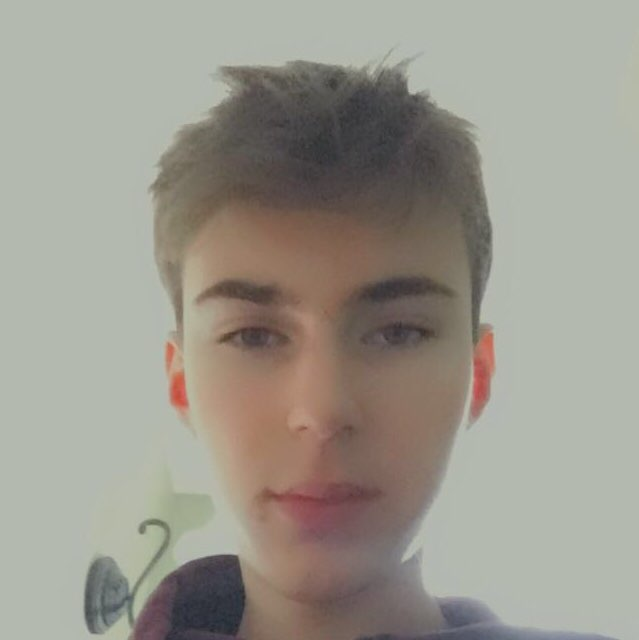

Joshua Labelle is a software engineer student at the University of Ottawa. Josh has been coding since elementary school and took computer science courses throughout highschool granting him proficiency in multiple different languages including Java, Python and HTML. Josh enjoys gaming and sports aswell as programming on his own time outside of school.
Evan is a first year Computer Science student at the University of Ottawa. Evan is interested in software development, music and finance. He played the trumpet in multiple high school bands. Evan started programming two years ago with Java. He is currently learning Python as well as HTML, CSS and Javascript. Evan is looking forward to his first co-op placement this summer.
Karim is currently studying software engineering at the university of ottawa. Karims current interest include playing soccer with friends, gaming and progamming. This website is karim's first ever project for software engineering and he is excited to work on it He believes that progamming is the future of this world.
Omar Oussi is first year software engineering student at the University of Ottawa. He enjoys coding in his spare time.

I am presently a first year bachelor sudent in software engineering at the University of Ottawa. I've always been fascinated by programmaming. Therefore, I like to work on different little projects. As of now I am a beginner in Python, Javascript, HTML and C++. Appart from coding, I enjoy playing video games and skying.
The love of knowledge is a kind of madness. - C. S. Lewis
Omar is currently studying computer science in the university of Ottawa. Omar is interested in gaming, programming, soccer and volleyball. This will be Omar’s first major project working with other people. Omar started programming 4 years ago, He started learning C++ then went on to learn a bit of basic C#, Omar participated in the FIRST robotics challenge where he learned basic algorithms and how to use labVIEW .He is currently learning HTML and python .
Akram is a young programmer. He's actually studidying software engineering at the university of Ottawa. Akram is a great sports fan. He's currently a member of the competitive geegees club. Akram participated in the development of Virco.corp with all his heart and hopes that it will have a bright future.